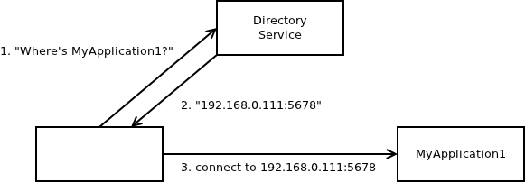

When I'm thinking about messaging, usually I assume is that its goal is to deliver nicely packaged tools for implementing different clever scaling algorithms. An example may be pub-sub pattern (or JMS topic) to do one-to-many data distribution, or req-rep pattern (or JMS queue) to implement a service provided by a cluster of stateless workers.
However, messaging is quite often used in a very different manner. Instead of providing a distributed algorithm among N processes, it is used for a simple one-to-one communication, basically in the same way as TCP is used.
The question then is why it is used in this manner at all. Why not simply use TCP instead and save yourself the headache of installing a messaging broker etc. The answer is simple. The messaging is in this case used to provide location-independence of the TCP endpoint. In other words, if we expect the location of the application to change as time goes on, we want to reach it by its logical name rather than by an IP address. We want to speak to "myApplication1" rather than to "192.168.0.111, port 5678".
Here's how it is accomplished using a classic broker-based messaging solution: First, queue named "MyApplication1" is created. It will be used as a shared rendez-vous point for both communicating parties. One application will then subscribe for messages from "MyApplication1" queue, the other one will publish messages to it. In case we need a bi-directional communication, we simply create two different queues with two different names.
The important property of this design is that it works even if physical location of one application (or, for what it's worth, both of them) changes. Logical address "MyApplication1" remains valid whatever the IP addresses of the two communicating parties are. Applications, of course, still have to know the IP address of the messaging broker but that one is assumed to be stable and never change.
In ZeroMQ world the situation is a bit different given that there are no named queues and and endpoints are referenced by IP addresses rather than by logical name. Of course, lack of location-independent names in the Internet stack (TCP/IP deficiency, and a pretty big one at that!) kicks in and users desperately search for a solution to implement a location-independent one-to-one communication. In this case the solution was found by combining a relatively obscure XREP socket (meant to be used to implement intermediate req/rep devices) and "identities", another obscure feature introduced into ZeroMQ to preserve state of the connection (the pending message queue) even while the peer application is being restarted. This state-preservation feature was removed from ZeroMQ later on, but the "identity" itself stayed in place, specifically because it was already being widely used for location-independent one-to-one communication. How it works technically, is that one party associates an "identity" (arbitrary string) with the connection, while the other peer hacks into the XREP socket protocol to send messages to a socket with particular "identity".
Now, using messaging-level solution where transport-level one (TCP or some other L4 service) should be used yields a leaky abstraction. Namely, strong decoupling of application lifetimes, as provided by messaging layer (application can send messages to its counterpart even if it is not running at the time) is actually something we actively want to avoid when doing TCP-like one-to-one communication. When peer shuts down or if it fails we want to be notified about the fact ("connection broken" error).
This problem was hastily solved in AMQP protocol ("immediate" and "mandatory" flags and the "basic.return" command) shortly before it was handed to the AMQP working group because it turned out that the real-world application AMQP was tested on simply cannot be implemented without it.
In ZeroMQ, the story was pretty similar. With XREP being misused for location-independent one-to-one communication, there was an immense pressure to add "disconnection notification" to the API. While I was maintaining the library I resisted the pressure to add transport-layer features to messaging-layer software, but almost immediately after I've resigned, the feature was added to the library. Additionally, XREP socket was renamed to ROUTER to hint at this band-aid for TCP/IP.
In short, this functionality is never implemented as an integral part of a messaging solution, rather, it is always added as an afterthought.
It seems that there is something strange going on here.
And once you think about it a for a second, the problem becomes obvious: As soon as a TCP connection between two endpoints is established, TCP is fully capable of doing the rest. There's no need for any messaging layer, actually, getting rid of messaging layer makes a lot of hacks and workarounds associated with the connection shutdown — as described in more detail above — unnecessary.
The only missing bit is how to establish a TCP connection, when all we have is the logical name of the peer application ("MyApplication1"). And once again, the solution is pretty straightforward. We need a directory service to map application names to IP addresses.
Here's how it works:

The question remains what should be done to solve the problem. Technically correct solution would be to move name resolution from messaging layer to transport layer. However, the real problem here is social rather than technical: Messaging products already provide the functionality and there's no incentive for the implementers to drop the feature. Actually, this single feature probably accounts for some 30-50% of the users (off-the-top-of-my-head estimate). Dropping it would mean losing considerable part of the audience and thus considerable portion of the revenue (for commercial products) or considerable portion of the credit (for free products).
The networking people, on the other hand don't generally feel the need for providing location-independent application names (kudos to John Day who is very vocal about this missing service) and the fact that those who badly need such functionality can generally paper over the gap using a messaging product doesn't really help to solve the problem.
EDIT: An interesting historical fact is that early versions of ZeroMQ (versions 0.x and 1.x) contained a directory service mapping logical names to IP addresses — although it lived at the messaging layer. In version 2.0 I've dropped the feature as being mis-layered, something that should be rather implemented in the network stack.
December 16th, 2012